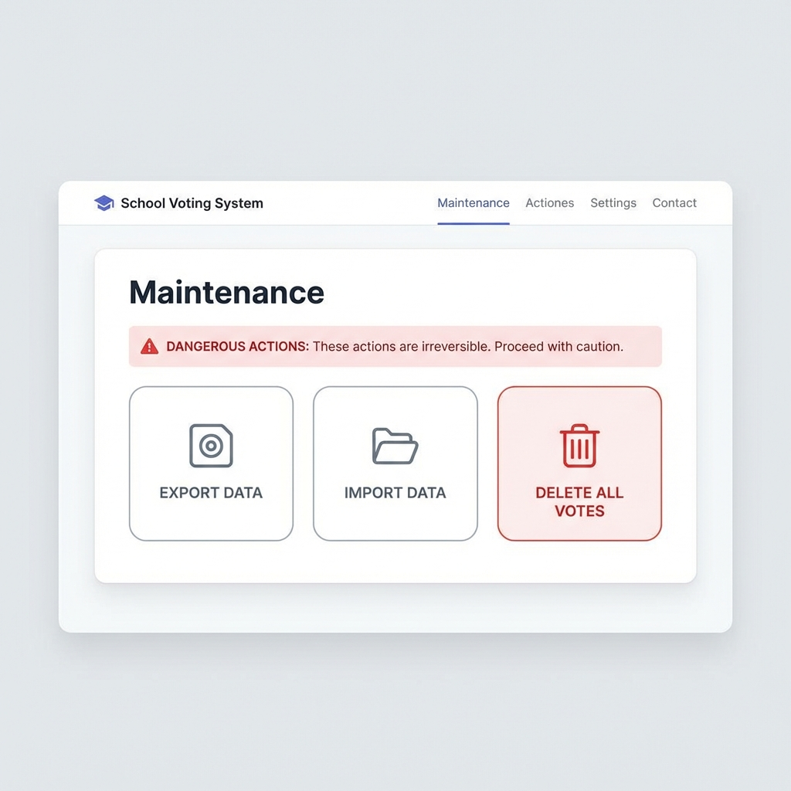

Guía para el Administrador
Configura y supervisa todo el proceso desde un panel intuitivo.
Paso 01
Acceso y Dashboard
Ingresa con tus credenciales de administrador para acceder al centro de control. Desde aquí puedes navegar a todas las áreas de gestión:
- Gestión de estudiantes y grados.
- Configuración de cargos (Categorías).
- Registro de candidatos con fotografías.
- Ajustes de identidad institucional.

Paso 02
Configuración de Candidatos
Registra a los aspirantes de forma sencilla. El sistema asocia cada candidato a una categoría específica (Personería, Contraloría, etc.):
- Carga de fotos de perfil directamente desde el equipo.
- Asignación de número de tarjetón.
- Vinculación automática de categorías a grados específicos.

Paso 03
Escrutinio y Reportes
Al finalizar la jornada, o durante la misma, puedes consultar el estado de la votación:
- Gráficas de barras con porcentajes de participación.
- Contador de votos totales y votos en blanco.
- Generación de Acta de Escrutinio oficial en PDF para impresión.

Paso 04
Mantenimiento y Respaldo
La seguridad de los datos es primordial. eLection incluye herramientas para asegurar tu información:
- Exportación: Descarga una copia de seguridad completa del sistema.
- Importación: Restaura datos desde un respaldo previo en segundos.
- Limpieza: Opción para borrar todos los votos registrados y reiniciar el proceso electoral (requiere código de confirmación).
